Mistři PHM Cupu
Titul v nejvyšší soutěži hned po obnovení činnosti.

KLUB · HISTORIE
Od začátků v Pražské lize přes mezinárodní turnaje až po mistrovský návrat v sezóně 2024/2025. Historie Berkutu v datech a fotografiích.
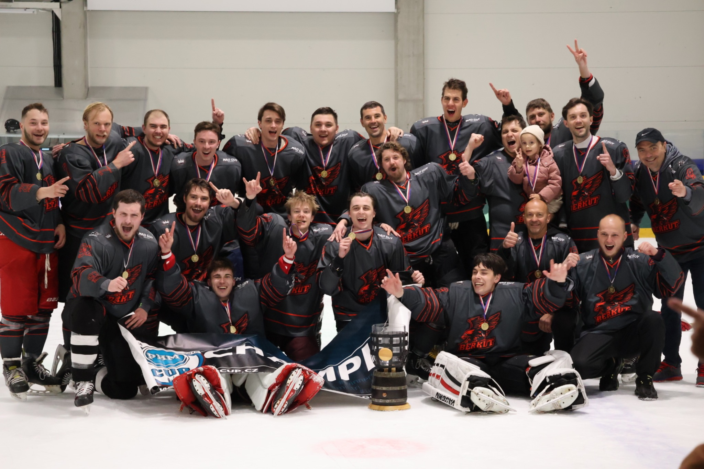
Týmová fotografie po zisku titulu PHM Cupu.
2008–2026
Hokejový klub Berkut vznikl v srpnu 2008. Základ týmu tvořili ruští a čeští hráči.
Berkut vstoupil do Pražské ligy ledního hokeje (PLLH), kde začínal v 8. skupině.
Tým postupně vyhrával své skupiny a v sezóně 2015/2016 se probojoval do 1. skupiny Pražské ligy.
Další kapitolu klubové historie zachycuje fotografie z prvního utkání CCM 1. ligy PHL.
V roce 2019 tým přerušil své působení.
Berkut obnovil činnost v nejvyšší soutěži PHM Cupu. Hned v první sezóně po návratu získal mistrovský titul.
V následující sezóně tým znovu postoupil do finále a obsadil druhé místo.
Vedle domácích soutěží se tým účastnil mezinárodních amatérských turnajů. Dvakrát zvítězil na Dolomit Cupu v Itálii a přidal vítězství na Ruan Cupu ve Francii a Budapest Cupu v Maďarsku. Startoval také na Riga Cupu v Lotyšsku.
V týmu se vystřídalo několik generací hráčů. Dnes Berkut navazuje na svou historii v nejvyšší divizi PHM Cupu.
KLUBOVÉ ÚSPĚCHY
Titul v nejvyšší soutěži hned po obnovení činnosti.
Druhá sezóna po návratu, druhá účast ve finále.
Dvě turnajová vítězství.
Vítězství na mezinárodním amatérském turnaji.
Vítězství na mezinárodním amatérském turnaji.
Z KLUBOVÉHO ARCHIVU
Kliknutím otevřeš celou fotografii.

Týmová fotografie z finále PHM Cupu. Berkut obsadil druhé místo.
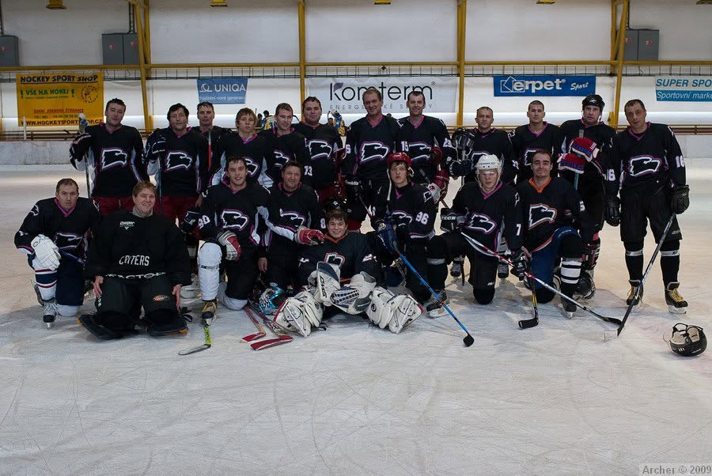
Berkut Praha v prvních letech působení.
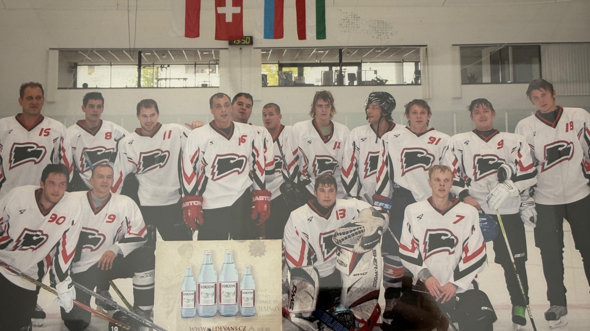
Týmová fotografie Berkutu z mezinárodního turnaje.
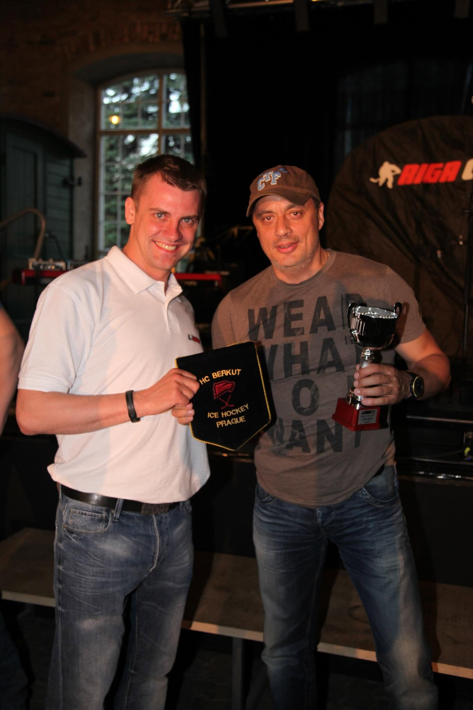
Předání poháru za čtvrté místo na turnaji v Rize.
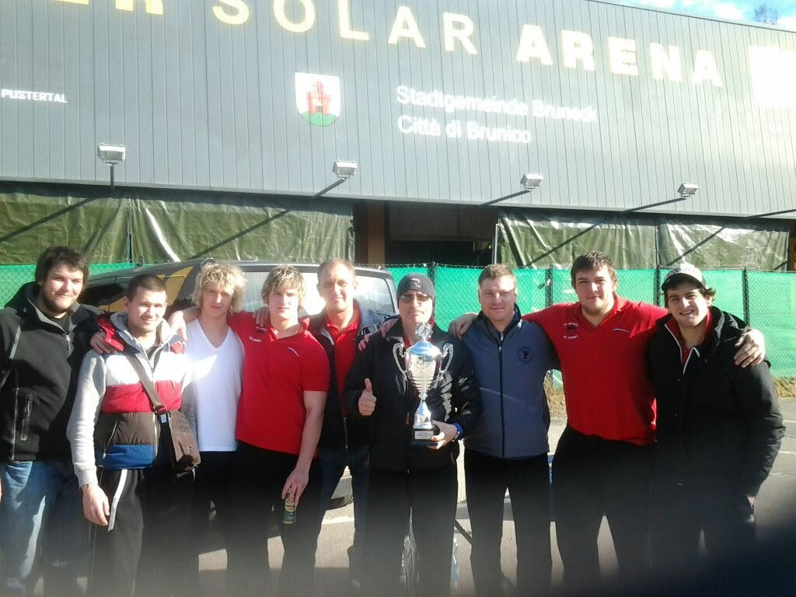
Tým s pohárem za první místo na turnaji v Itálii.
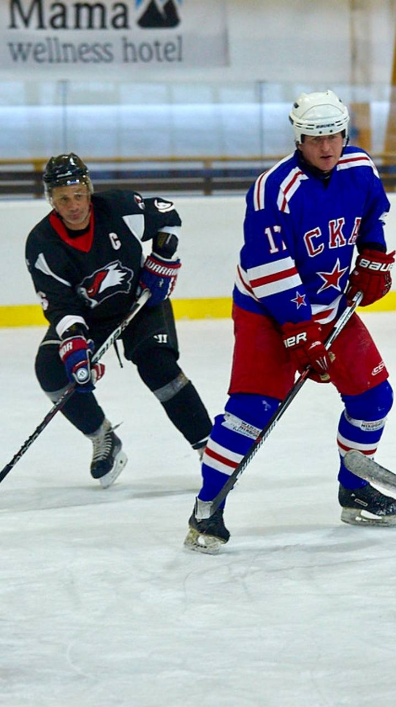
Soupeřem byl HC Petrohrad, nikoli tým z KHL.
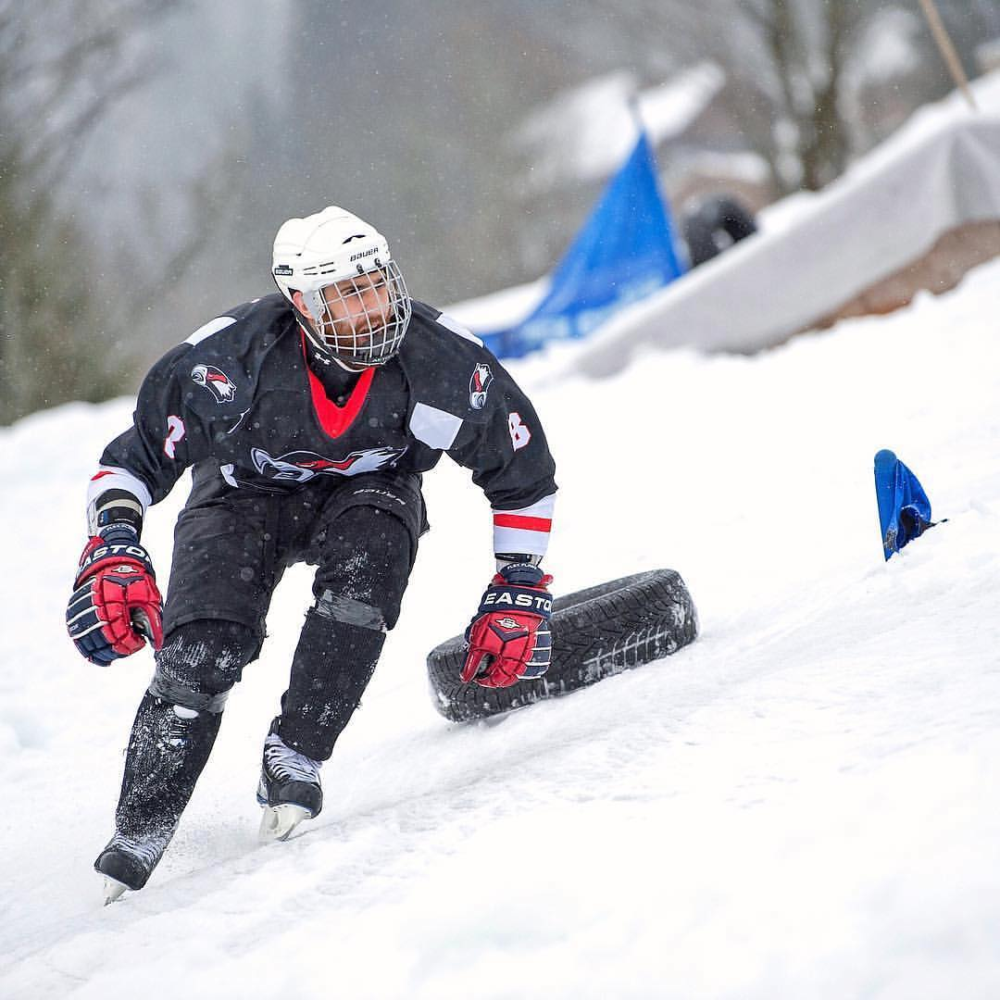
Závodník v dresu Berkut Praha při závodě na ledové trati.
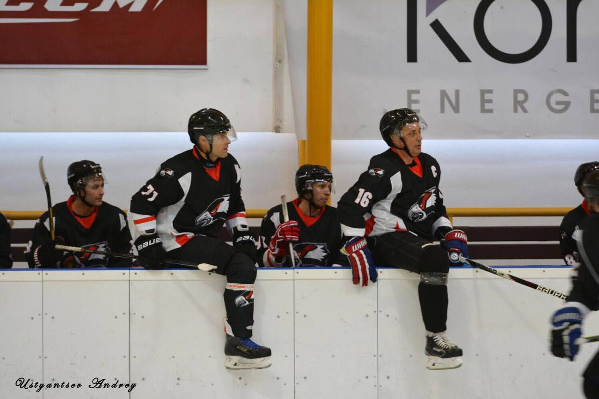
Fotografie ze střídačky při prvním utkání v soutěži.
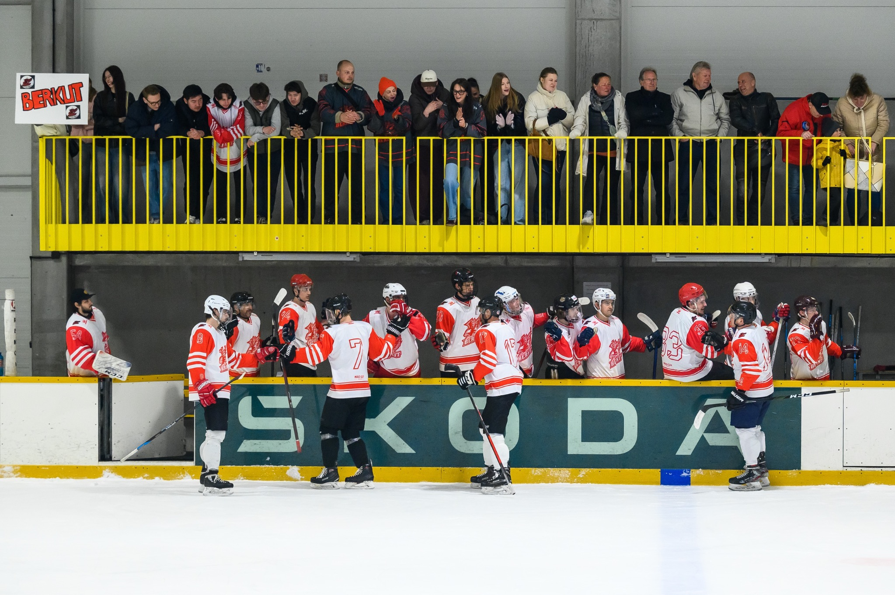
Oslava gólu ve finále sezóny 2025/2026.
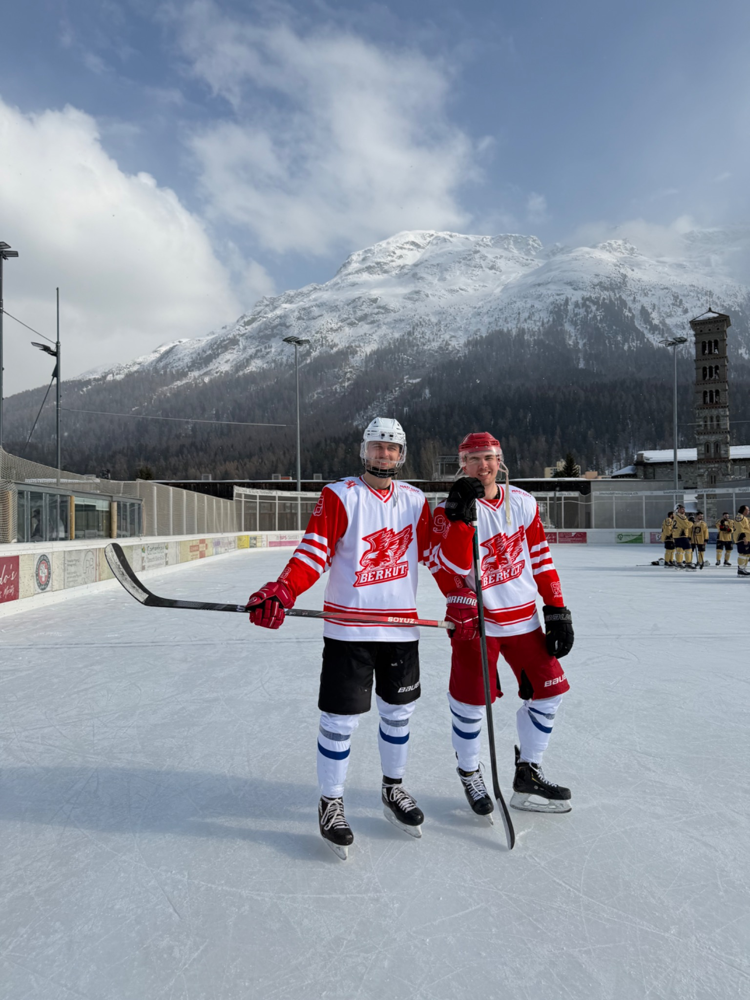
Jednotliví hráči se zúčastnili turnaje ve Švýcarsku. Berkut zde jako tým nestartoval.
KLUBOVÁ IDENTITA
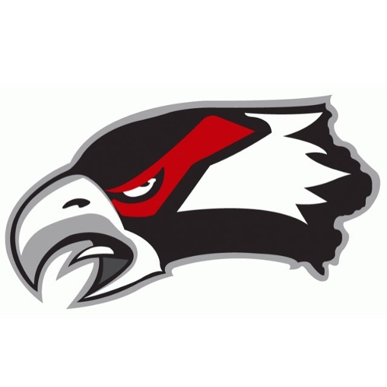